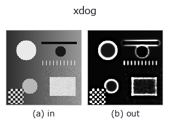

edges op• 데이터 종류: image → image
• 호출: fullseye.apply(img, "xdog", a=0.5, b=0.5)(2-D 는 이미지 1 장 + 스칼라 노브 2 개 a,b∈[0,1] 모델)
• GPU: 없음(CPU 참조 구현만)

*그림은 128×128 합성 입력에서 실제로 실행한 출력. 왼쪽이 입력, 오른쪽이 출력. 점군은 위에서 본 산점도(밝기 = z), 1-D 열은 꺾은선, 볼륨은 z 방향 최대값 투영, 동영상은 가운데 프레임, 복소 영상은 진폭이며, 그림이 되지 않는 반환값은 값 자체를 표시한다.*
노브 a 를 훑기(0.1 / 0.5 / 0.9, 다른 노브는 기본값):
▸ xdog: 노브 a 스윕 (문서 사이트)
노브 b 를 훑기(0.1 / 0.5 / 0.9, 다른 노브는 기본값):
▸ xdog: 노브 b 스윕 (문서 사이트)
다른 영상에서도(합성 장면 / 사진 / 동전. 윗줄이 입력, 아랫줄이 그 출력. 노브는 기본값):
▸ xdog: 다른 입력 이미지 (문서 사이트)
*4열은 컬러 (H,W,3) 입력. 이 op는 채널을 넘나들지 않고 컬러를 다룰 수 있다(색 채널을 세 번째 공간축으로 컨볼루션하지 않음).*
XDoG(확장 가우시안 차분, Winnemoller·Kyprianidis·Olsen 2012)에 의한 선화·수묵풍 스타일라이즈.
> 아래 상세 설명은 원문입니다 —— 요약과 제목은 번역되어 있습니다.
D = G_sigma - tau * G_(k sigma) を作り(G はガウシアンのぼかし)、ソフト閾値 T(u) = 1 (u >= eps)、1 + tanh(phi (u - eps)) (u < eps) を通す。出力は 0〜1 で、紙の白(1)の上に、縁の暗い側だけが黒(0)に沈む。tau = 1 なら D は通常の DoG、phi を無限大にすると閾値は D >= eps の二値(DoG の符号)になる。
a がぼかしの幅 sigma = 0.5 + 2.5a(0.5〜3.0)を、b が閾値の位置 eps = 0.1b(0〜0.1)を振る。sigma は線の太さと拾う縁の大きさ、eps を上げると平坦部も黒く沈み(tau < 1 のとき明るい平坦部の D は (1 - tau) x 明るさ で、最大 0.02)、墨を塗ったような絵になる。残りは固定: k = 1.6、tau = 0.98、phi = 50(D の振れは縁で ±0.1 前後なので、遷移幅は約 0.02)。
端の扱い: 端の画素を複製する(最近傍)。
適用条件: (1) 出力は入力の明るさの階調を捨てる(ほぼ二値)。計測には使わず見せ方のための op。(2) tau を 1 にしない既定では、真っ白な平坦部は D = 0.02 で eps を 0.02 超に上げると黒くなる。(3) 雑音の多い画像は sigma を上げないと雑音が線になる。
• 샘플 데이터 카탈로그(DL URL / 라이선스) —— 2-D 는 skimage.data(BSD/public)+ 합성, 3-D 는 실데이터 소스(Stanford/PDS 등)의 DL URL.
• 연산자의 내력·참고문헌 —— 이 연산자 족의 바탕이 된 연구/기법의 출처.
• 알고리즘의 정전(저자·연도)과 용도는 위의 패밀리 사용 가이드에 적혀 있습니다.
아래 프로그램은 실제로 실행됨을 확인했습니다(그림과 같은 입력). Studio 도움말에서는 이 블록이 버튼이 되어 즉시 불러와 실행할 수 있습니다.
xdog 0.40 0.50
• gallery2d_edges — py -3.11 examples/gallery2d_edges.py
image 를 입력으로 받는 것)identity · gaussian · mean_box · mean_box_wh · bilateral · kuwahara · unsharp · median
edges)sobel_mag · prewitt_mag · roberts_mag · dog · edge_transition_width · grad_dir · log · corner_response
*Provenance: ops.py — 2D 연산자 레지스트리. 이 op 노트는 tools/opdocs.py md 가 자동 생성합니다(직접 편집하지 마세요).*
© 2026 Kazufumi Furuse — Fullseye operator documentation. Licensed under Apache-2.0.